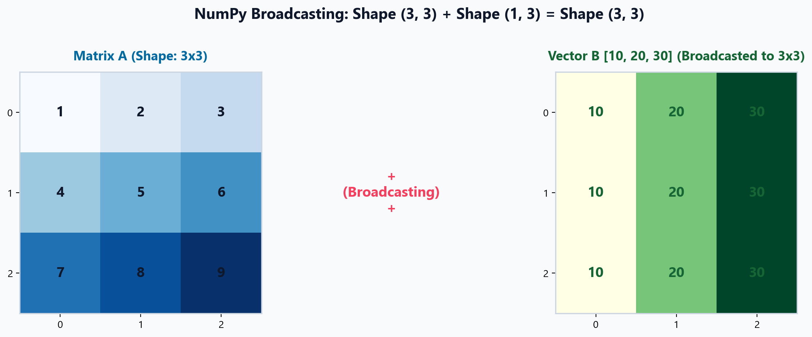
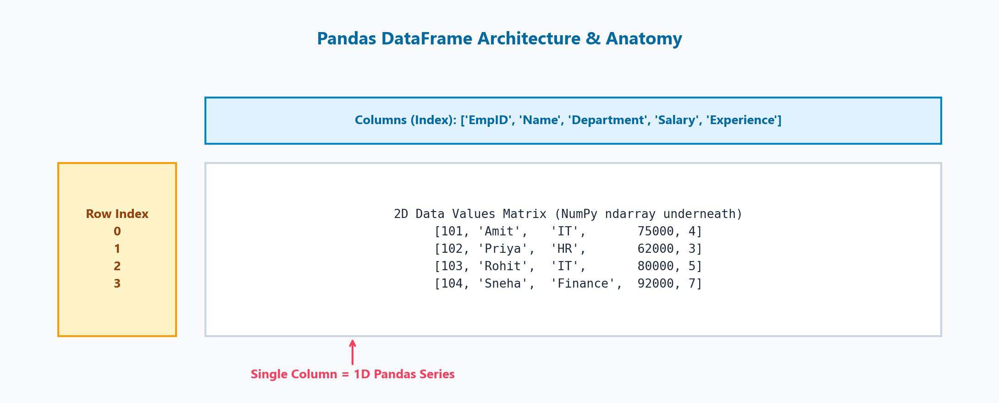
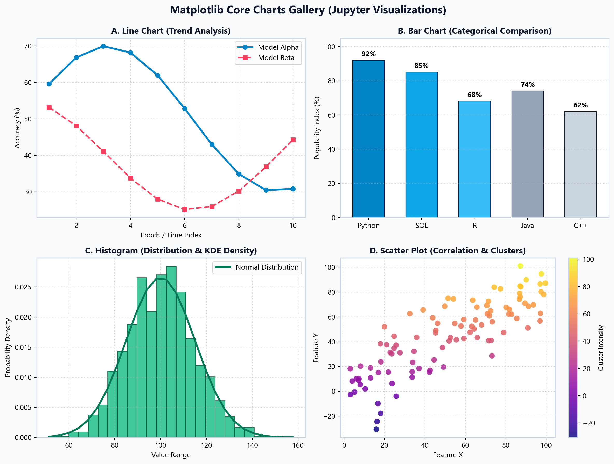
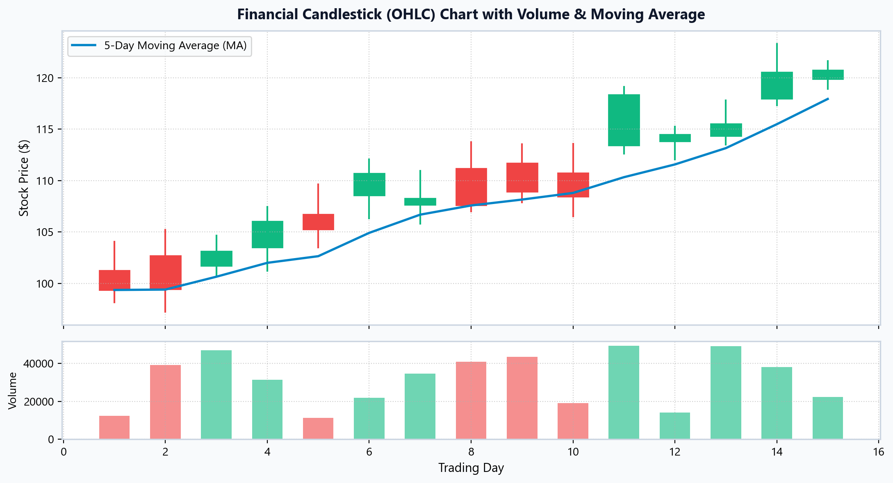
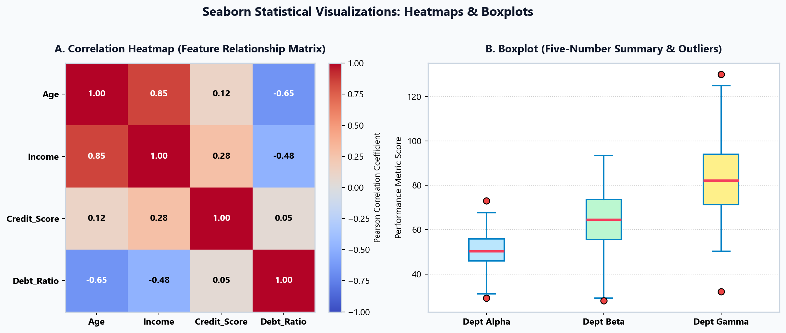
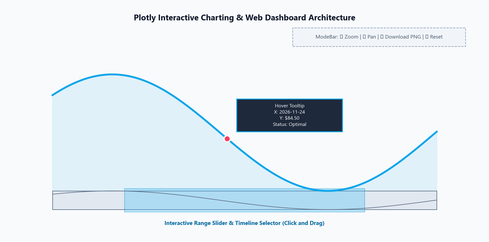

Jupyter Notebook - Part 5: Data Science Libraries
पायथन डेटा साइंस इकोसिस्टम की 5 सबसे महत्वपूर्ण और शक्तिशाली लाइब्रेरीज का संपूर्ण, हैंड्स-ऑन हिंदी गाइड: NumPy, Pandas, Matplotlib, Seaborn और Plotly। डेटा मैनिपुलेशन, स्टैटिस्टिकल एनालिसिस और फाइनेंशियल विज़ुअलाइज़ेशन का व्यावहारिक अध्ययन।
Chapter 45: NumPy (Numerical Python)
अध्याय 45NumPy (Numerical Python) पायथन में वैज्ञानिक कंप्यूटिंग और डेटा साइंस की आधारशिला है। यह बहु-आयामी ऐरे (Multi-dimensional Arrays - ndarray) और उन पर अत्यधिक तीव्र गति से गणितीय संचालन करने के लिए C और Fortran में लिखे गए वेक्टराइज़्ड फंक्शन्स प्रदान करता है।
45.1 NumPy Arrays (`ndarray`) vs Python Lists
| विशेषता | NumPy Array (`ndarray`) | Python Standard List |
|---|---|---|
| मेमोरी संरचना | सघन व निरंतर मेमोरी (Contiguous memory blocks)। | पॉइंटर्स की बंटी हुई सूची (Non-contiguous pointers)। |
| गति (Speed) | अत्यधिक तेज़ (50x से 100x तेज़, SIMD हार्डवेयर ऑप्टिमाइज़्ड)। | धीमी (हर तत्व का टाइप-चेक रनटाइम पर होता है)। |
| डेटा प्रकार | सजातीय (Homogeneous - सभी तत्व एक ही प्रकार के)। | विजातीय (Heterogeneous - अलग-अलग प्रकार संभव)। |
| वेक्टराइज़ेशन | बिना लूप के सीधे गणितीय संक्रियाएं (arr * 2)। |
लूप या लिस्ट कंप्रिहेंशन की आवश्यकता होती है। |
45.2 Array Creation & Attributes
45.3 Indexing, Slicing & Boolean Masking
45.4 Broadcasting (ब्रॉडकास्टिंग के नियम)
Broadcasting NumPy की वह क्षमता है जिसके द्वारा अलग-अलग आकारों (Shapes) के ऐरेज़ पर बिना अतिरिक्त मेमोरी खर्च किए सीधे अंकगणितीय संक्रियाएं की जा सकती हैं:
- नियम: दो ऐरे ब्रॉडकास्ट हो सकते हैं यदि उनके पिछले आयाम (Trailing dimensions) या तो बराबर हों, या उनमें से कोई एक
1हो।

45.5 Mathematical & Statistical Operations
np.dot(A, B)याA @ B: मैट्रिक्स गुणन (Matrix Multiplication)।arr.sum(axis=0): कॉलम-वार योग |arr.sum(axis=1): पंक्ति-वार योग।np.mean(),np.std(),np.median(),np.min(),np.max()।np.argmax()/np.argmin(): अधिकतम/न्यूनतम मान का इंडेक्स लौटाता है।arr.reshape(rows, cols): ऐरे का आकार बदलना।
Chapter 46: Pandas (डेटा विश्लेषण एवं हेरफेर)
अध्याय 46Pandas पायथन में सारणीबद्ध (Tabular) और संरचित डेटा के विश्लेषण का सबसे शक्तिशाली टूल है। यह दो मुख्य डेटा संरचनाएं प्रदान करता है: Series (1-आयामी) और DataFrame (2-आयामी टेबल)।
46.1 DataFrame Creation & Inspection
Pandas DataFrame की आंतरिक संरचना में Index (पंक्ति पहचानकर्ता), Columns (शीर्षक), और अंतर्निहित 2D NumPy डेटा ऐरे शामिल होते हैं। प्रत्येक अलग कॉलम वास्तव में एक 1D Pandas Series होता है:

46.2 Indexing: `loc` vs `iloc`
| इंडेक्सर | प्रकार | सिंटैक्स उदाहरण | विवरण |
|---|---|---|---|
df.loc[] |
लेबल-आधारित (Label-based) | df.loc[0:2, ['Name', 'Salary']] |
इंडेक्स के वास्तविक नाम और कॉलम के शीर्षक द्वारा एक्सेस करता है (अंतिम सीमा शामिल होती है)। |
df.iloc[] |
संख्यात्मक स्थिति (Integer-position) | df.iloc[0:2, 1:3] |
शुद्ध 0-आधारित पूर्णांक स्थिति द्वारा एक्सेस करता है (Python स्लाइस की तरह अंतिम सीमा शामिल नहीं होती)। |
46.3 Filtering & Sorting
46.4 GroupBy Operations (Split-Apply-Combine)
डेटा को श्रेणियों में बांटकर सांख्यिकीय सारांश निकालने के लिए groupby() का उपयोग होता है:
46.5 Handling Missing Data (NaN)
df.isna().sum(): प्रत्येक कॉलम में मिसिंग वैल्यूज की संख्या गिनना।df.dropna(): उन सभी पंक्तियों को हटाना जिनमें कोई भी मान मिसिंग (NaN) हो।df['Salary'].fillna(df['Salary'].mean(), inplace=True): मिसिंग मानों को औसत (Mean/Median) से भरना।
46.6 Merging & Joining (SQL-like Joins)
# दो DataFrames को कॉमन Key पर जोड़ना
merged_df = pd.merge(df_employees, df_departments, on='DeptID', how='inner') # inner, left, right, outer46.7 Data Input/Output (CSV, Excel, SQL)
# CSV पढ़ना व लिखना
df = pd.read_csv('dataset.csv')
df.to_csv('cleaned_dataset.csv', index=False)
# Excel फ़ाइलें (openpyxl आवश्यक)
df = pd.read_excel('sales_data.xlsx', sheet_name='Q1')
# SQL Database से सीधे लोड करना
import sqlite3
conn = sqlite3.connect('company.db')
df = pd.read_sql_query("SELECT * FROM employees WHERE salary > 50000", conn)Chapter 47: Matplotlib (आधारभूत विज़ुअलाइज़ेशन)
अध्याय 47Matplotlib पायथन का सबसे पुराना और मूल 2D प्लॉटिंग पैकेज है। इसका सब-मॉड्यूल matplotlib.pyplot MATLAB जैसी सरल प्लॉटिंग इंटरफ़ेस प्रदान करता है।
47.1 The Anatomy of a Plot (चार्ट के अंग)
- Figure: पूरा कैनवास या विंडो जिस पर सभी प्लॉट्स बने होते हैं।
- Axes: वास्तविक प्लॉटिंग क्षेत्र जिसमें X और Y अक्ष, शीर्षक (Title), और डेटा पॉइंट्स होते हैं।
47.2 Core Chart Types

A. Line Chart (ट्रेंड एनालिसिस):
import matplotlib.pyplot as plt
months = ['Jan', 'Feb', 'Mar', 'Apr', 'May']
revenue = [12000, 15000, 14000, 19000, 24000]
plt.figure(figsize=(8, 4))
plt.plot(months, revenue, color='#0284c7', marker='o', linewidth=2, linestyle='--', label='2026 Revenue')
plt.title("मासिक आय विश्लेषण", fontsize=14, fontweight='bold')
plt.xlabel("महीने")
plt.ylabel("आय ($)")
plt.grid(True, linestyle=':', alpha=0.6)
plt.legend()
plt.show()B. Bar Chart, Histogram & Scatter Plot:
| चार्ट का प्रकार | फ़ंक्शन सिंटैक्स | उपयोग का परिदृश्य |
|---|---|---|
| Bar Chart | plt.bar(categories, values, color='teal') |
अलग-अलग श्रेणियों (Categories) के मानों की तुलना करने के लिए। |
| Histogram | plt.hist(data, bins=20, edgecolor='black') |
डेटा के निरंतर वितरण (Distribution, Skewness) को समझने के लिए। |
| Scatter Plot | plt.scatter(x, y, alpha=0.7, c=colors, cmap='viridis') |
दो संख्यात्मक चरों के बीच सहसंबंध (Correlation/Relationship) देखने के लिए। |
47.3 Financial Candlestick Visualization (`mplfinance`)
स्टॉक मार्केट और वित्तीय विश्लेषण में शेयर की कीमतों (Open, High, Low, Close - OHLC) को दर्शाने के लिए Candlestick Charts का उपयोग किया जाता है। आधुनिक Matplotlib में इसे mplfinance द्वारा सहजता से बनाया जाता है:
%pip install mplfinance
import mplfinance as mpf
# DataFrame में 'Open', 'High', 'Low', 'Close', 'Volume' कॉलम्स और DatetimeIndex होना चाहिए
mpf.plot(df_stock, type='candle', volume=True, mav=(10, 20), style='charles',
title="निफ्टी 50 - Candlestick Chart (with 10/20 MA)")
Chapter 48: Seaborn (सांख्यिकीय डेटा विज़ुअलाइज़ेशन)
अध्याय 48Seaborn Matplotlib के ऊपर निर्मित एक उच्च-स्तरीय लाइब्रेरी है। यह सुंदर डिफ़ॉल्ट थीम्स, आकर्षक रंग पट्टियाँ (Color Palettes) और Pandas DataFrame के साथ सहज एकीकरण प्रदान करती है।
48.1 Statistical Distribution Plots (Boxplot & Violinplot)
आउटलायर्स (Outliers) और चतुर्थक (Quartiles) का पता लगाने के लिए boxplot सर्वोत्तम है, जबकि violinplot बॉक्सप्लॉट के साथ KDE डिस्ट्रीब्यूशन को भी मिलाता है:
48.2 Correlation Heatmap (सहसंबंध हीटमैप)
मशीन लर्निंग में फीचर सेलेक्शन के लिए यह देखना अनिवार्य होता है कि कौन-से फीचर्स आपस में अत्यधिक संबंधित हैं:

48.3 Pairplot (बहु-चरणीय एक्सप्लोरेशन)
sns.pairplot(df, hue='target') डेटासेट के सभी संख्यात्मक कॉलमों के बीच एक साथ स्कैटर प्लॉट्स का ग्रिड और विकर्ण (Diagonal) पर हिस्टोग्राम तैयार करता है।
Chapter 49: Plotly (इंटरैक्टिव व वित्तीय चार्ट्स)
अध्याय 49Plotly डेटा साइंस में अत्याधुनिक इंटरैक्टिव वेब-आधारित विज़ुअलाइज़ेशन लाइब्रेरी है। यह D3.js इंजन पर काम करती है और उपयोगकर्ता को चार्ट में सीधे ज़ूम करने, पैन करने, विशिष्ट क्षेत्रों को सेलेक्ट करने और होवर टूलटिप्स देखने की सुविधा देती है।
49.1 Interactive Plotly Express
49.2 Interactive Financial Candlestick Charts (`plotly.graph_objects`)
Plotly का Candlestick चार्ट वित्त (Finance) और अल्गोरिदमिक ट्रेडिंग का उद्योग मानक है। इसमें इनबिल्ट रेंज स्लाइडर (Range Slider) और टाइमलाइन पैनिंग मिलती है:
49.3 Exporting Standalone Interactive Dashboards
Plotly चार्ट्स की सबसे बड़ी खूबी यह है कि आप उन्हें एक स्टैंडअलोन HTML फ़ाइल में सहेज सकते हैं, जिसे कोई भी व्यक्ति बिना पायथन या जुपिटर के अपने ब्राउज़र में खोलकर इंटरैक्ट कर सकता है:
# पूरे इंटरैक्टिव चार्ट को HTML के रूप में एक्सपोर्ट करें
fig.write_html("interactive_financial_report.html")